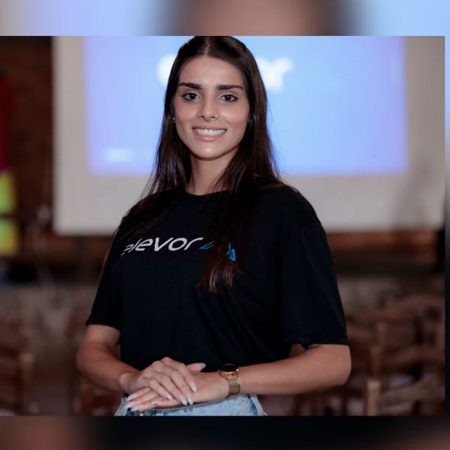
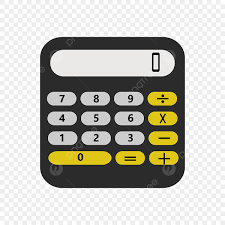
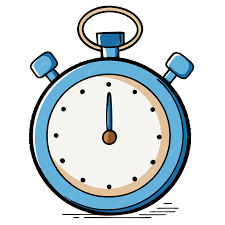
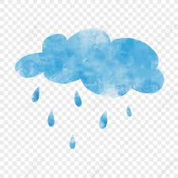

Nicólli Gomes de Ramos
Analista e Desenvolvedora Front End

Analista e Desenvolvedora Front End
👋 Olá, sou a Nicólli Gomes, tenho 22 anos e sou apaixonada por tecnologia. 🚀
Desde a minha adolescência, venho me apaixonando cada vez mais por tudo que envolve o universo da
programação e da tecnologia. Estou sempre buscando me aprimorar e aprender novas linguagens de
programação.
💻 Atuo como Analista e Desenvolvedora Front End, com experiência em HTML, CSS, JavaScript, Python e
outras ferramentas do mundo da tecnologia.
🚀 Atualmente, meu foco está em melhorar minhas habilidades em design responsivo e desenvolvimento de
interfaces de usuário mais acessíveis e funcionais.
🌟 Estou sempre em busca de novos desafios, projetos e oportunidades que me permitam crescer como
profissional e contribuir para a construção de soluções inovadoras.
📧 Você pode me contatar por e-mail: 1132047@atitus.edu.br

Criei uma calculadora funcional em Python com interface simples e intuitiva.

Aplicação para organização de tarefas diárias, com sistema de marcação.

Criei um cronômetro funcional utilizando JavaScript e design responsivo.

Aplicativo que mostra a previsão do tempo em tempo real com consumo de API.